T O K I 門
home
Sobre
CTF
Criptografia
Programação
Seja bem vindo ao Portal!
Esse site foi desenvolvido para compartilhar as minhas aventuras no mundo da
ciência da computação!
Divirta-se!
Aliás...me chamo
Toki!
